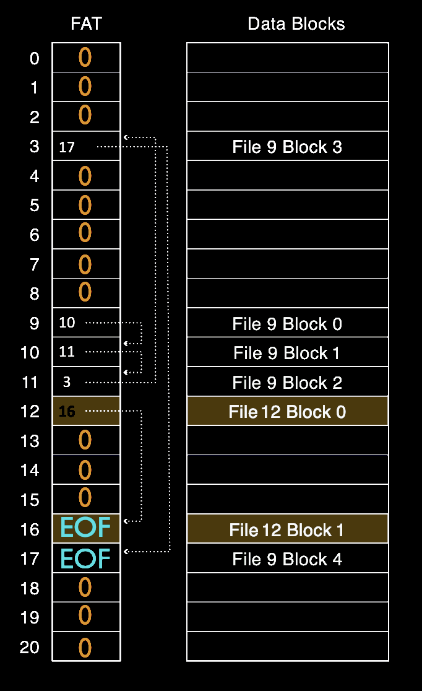

I implemented a virtual block store (VBS), practicing one-to-many virtualization of the disk by giving the illusion that there are multiple virtual disks for use by the OS and user applications with just one physical disk. I developed the read and write operations that modify the blocks in memory. A file system manages a disk by partitioning its blocks. The first block is the superblock which stores metadata for the file system such as the free list. The next blocks contain the inode table which stores the metadata for each VBS operation. It is followed by the FAT table with FAT entries corresponding to the number of data blocks. The freelist in the superblock maintains a linked list of free FAT entries. Each VBS is organized as a linked list of FAT entries where each FAT entry points to the next entry. Finally, the data blocks store the actual data of each VBS. Shown below, is the partitioning of the physical disk. To the right, File Allocation Table corresponding to data blocks.
I developed the software layer between the file system above and the disk driver below. I implemented read and write algorithms for a RAID4 layout. RAID stripes data accross multiple physical disks and RAID4 provides the illusion of a single virtual disk with fault tolerance, meaning that if one of the physical disks fail, the virtual disk can still function as normal. Fault tolerance is possible through a parity disk that holds the XOR of data disks. If one of the disks fail, its value can be reconstructed by XOR-ing the rest of the disks. The restorative property of parity is shown below. D1...DN-1 represent data disks and DN is the parity disk. This project practiced the technique of many-to-one virtualization.